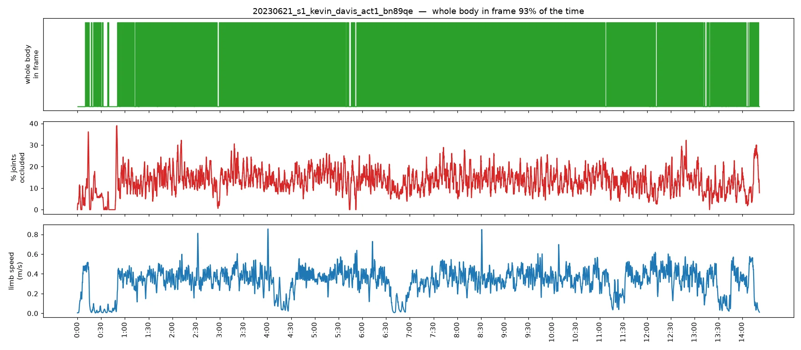
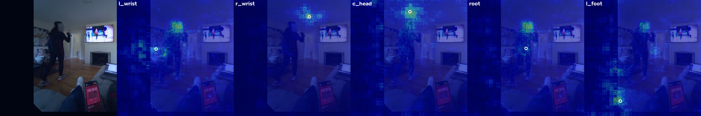
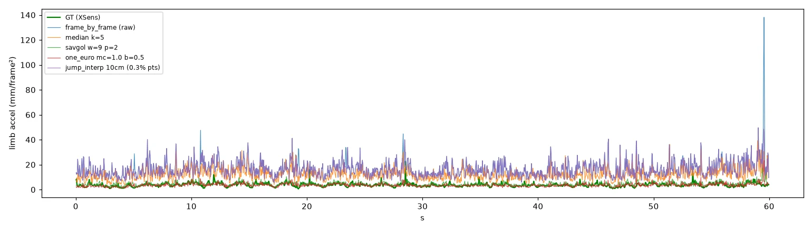
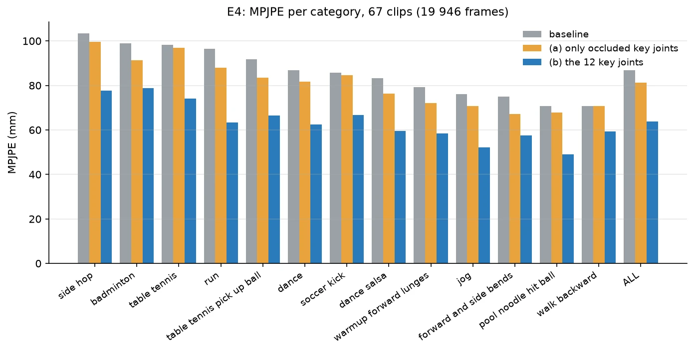
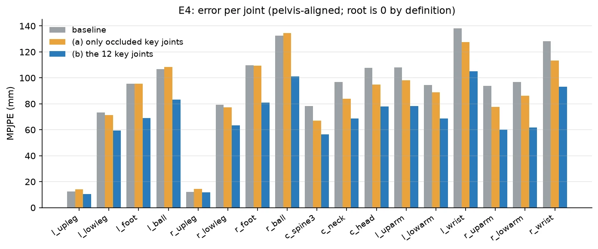
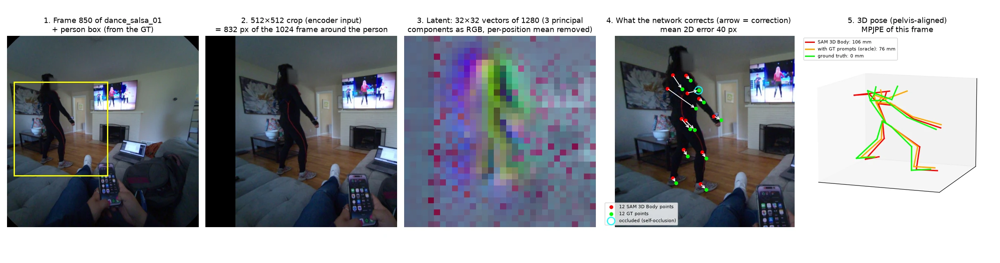
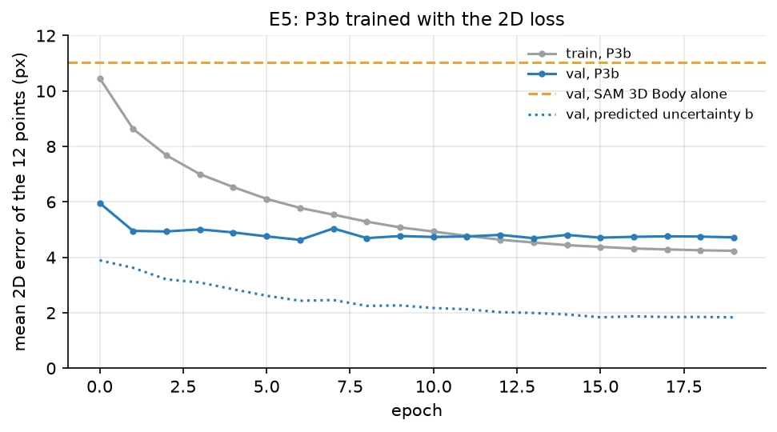

Abstract
Motion capture is too expensive to collect the amount of human motion that imitation learning for humanoid robots needs, so one alternative is to extract it from ordinary video. We study whether SAM 3D Body[1], a single-image 3D human pose model, can be trusted on daily-life video, and how to correct it where it fails. We use NymeriaPlus[3,4]: a moving observer records a participant with fisheye glasses while an inertial suit captures the true motion, already in the same skeleton that SAM 3D Body predicts (MHR[2]).
On 67 clips (20 165 frames, 10 people, 13 movement categories) SAM 3D Body reaches 86.9 mm of MPJPE and jitters (acceleration error 17.7 mm/frame²); its worst joints are the wrists and toes, and on an occluded wrist the error is a sustained offset, which a classical filter does not fix. Giving its promptable decoder the 12 true key points lowers MPJPE by 27 %, and most of that gain comes from joints that are visible. A small Transformer that corrects SAM 3D Body's own 12 key points from its stored latent brings the 2D error of those points from 11.0 to 4.6 px on a held-out person and MPJPE from 86.6 to 80.9 mm, about 30 % of the oracle's gain. A 3D fine-tuning through the frozen decoder is running.
Keywords: 3D human pose, SAM 3D Body, promptable decoder, egocentric video, occlusion, NymeriaPlus, MHR.
Introduction
Context
Humanoid robots learn whole-body skills by imitating human motion, and motion capture is the usual source of that motion. It is expensive and limited to a laboratory. Video is cheap and abundant, but turning a video into the trajectory of every joint means trusting a pose estimator, frame after frame, through camera motion and occlusion.
We work with Nymeria[3], daily-life recordings with occlusion: 1 100 sequences (340 h) in 20 scenarios such as cooking, workout, dance or games with a partner, and with SAM 3D Body[1], a model that estimates the 3D body of one person from one image.
Research question
Can SAM 3D Body, a single-image model, be trusted on video? Which trajectories are not good, and how can we improve them? The course asks for three phases: open the model (Phase A, teardown), intervene in its core with controlled ablations (Phase B), and stress it out of its domain (Phase C). This page follows the order in which we took each decision; the full record, with every alternative and where AI assistance was used, is the project's Research Decision Book in the repository.
Chapter 1: Data, from 340 Hours of Video to Clips with Ground Truth
Why NymeriaPlus
For each sequence, Nymeria provides video from several Aria glasses (the participant's head and wrists, and an observer who records the participant from a third-person view), audio, narrations written by annotators, and the participant's body motion from an XSens inertial suit. We use NymeriaPlus[4], because its motion is already fitted to MHR[2], the 127-joint skeleton that SAM 3D Body outputs, so no skeleton mapping is needed (D1). Nymeria is also outside SAM 3D Body's training data, and its fisheye, moving camera and occluded people make it a real domain shift.
The observer's fisheye image is rectified to a 1024×1024 pinhole camera (f = 450 px, ~97° field of view) and the exact intrinsics are given to the model (D2). Each video frame is paired with the motion-capture pose at that instant, and the pose is brought into the camera's coordinates with the observer's SLAM trajectory.
Finding the motion without downloading the video
Each video weighs ~16 GB, so we first read the narrations (text, every ~5 s) of the 844 narrated sequences and chose 19 with whole-body motion. Then, still without video, we drew the ground-truth skeleton as the observer camera sees it (a preview) and measured every second whether the whole body is in the image, how many joints are hidden by the body itself, and how fast the limbs move.

A clip library labelled by the movement of the body
The same word in a narration covers different movements ("hit" can be a badminton stroke, a table-tennis stroke or a punch), so we read every narration in usable time (2 465) and labelled it by what the body does, down to the type of stroke or dance step (D4). A clip is then a run of consecutive seconds with the same label, the whole body in the image in every second, mean limb speed ≥ 0.3 m/s and 3–30 s (D5).
| Macro category | Clips | Minutes | Macro category | Clips | Minutes |
|---|---|---|---|---|---|
| soccer | 317 | 30.4 | run | 41 | 7.4 |
| dance | 188 | 32.5 | table tennis | 41 | 3.8 |
| badminton | 152 | 11.2 | ball games (other) | 31 | 6.1 |
| walk | 105 | 10.9 | daily actions | 31 | 2.4 |
| exercise | 57 | 15.7 | stretch | 17 | 2.3 |
| jump | 12 | 3.6 |
Images are heavy (~0.3 GB per minute of clip at 30 fps), so we keep two kinds of data (D6): the motion capture of the whole 19 sequences without video (308 min, light), and images only where SAM 3D Body has to run. The experiments below use the first 67 clips we had with images (catalog_v_old, 13 broader categories, D12); the library above is the next step.
Chapter 2: The Base Model and its Teardown (Phase A)
SAM 3D Body reads a crop around the person with a DINOv3[5] encoder, and a promptable decoder predicts the MHR parameters; it can take 2D key points as prompts, like the SAM family. We use the released DINOv3-H+ checkpoint, always frozen (D7), with the box from the projected ground truth for now (D8; a real detector is ablation A7), and the body decoder only: on our first clip the hand decoders do not change the body and triple the time per frame (D9).
| Metric | body | full |
|---|---|---|
| MPJPE after pelvis alignment | 84.0 mm | 84.1 mm |
| PA-MPJPE | 57.0 mm | 57.1 mm |
| Acceleration (ground truth 3.7) | 16.4 mm/frame² | 16.8 mm/frame² |
| Left / right wrist | 211.7 / 126.8 mm | 211.7 / 128.3 mm |
| Time per frame (RTX 4070) | 144 ms | 450 ms |
Teardown
| Part | Value |
|---|---|
| Parameters | 1 285 M in total, 953 M learned (the rest is the fixed MHR body model, embedded twice) |
| Encoder (DINOv3 ViT-H+/16, 32 blocks, 32×32 tokens × 1280) | 840.6 M parameters, 98 % of the FLOPs (1 902 of 1 938 GFLOPs per person) |
| Body decoder | 39.4 M parameters, 1.7 % of the FLOPs, but 78 ms vs 50 ms for the encoder (iterative: 6 calls to the MHR head) |
| Time and memory per frame (RTX 4070) | body 144 ms, full 450 ms; peak memory 3.5 GB |


Chapter 3: Where SAM 3D Body Fails on Video
One clip, frame by frame
On dance_salsa_01 SAM 3D Body reaches 84.0 mm of MPJPE and 57.0 mm of PA-MPJPE, but its acceleration is 4.4× the ground truth's (16.4 vs 3.7 mm/frame²), and the left wrist, occluded at times, is 212 mm off (E1).

dance_salsa_01.A filter removes the jitter, not the error
| Method | MPJPE | PA-MPJPE | Accel. error | Accel. | Left wrist |
|---|---|---|---|---|---|
| frame by frame (raw) | 84.0 | 57.0 | 12.9 | 16.4 | 211.7 |
| median, k = 5 | 83.8 | 56.8 | 9.0 | 12.4 | 210.8 |
| Savitzky-Golay[6], w = 9, p = 2 | 83.7 | 56.7 | 2.3 | 4.5 | 210.9 |
| One-Euro[7] | 88.2 | 60.7 | 2.1 | 3.6 | 220.7 |
| spike detection (> 10 cm) + interpolation | 84.0 | 57.0 | 12.6 | 16.1 | 211.4 |

67 clips: the failure atlas
To fix the whole pipeline before extracting the library, we ran it on the 67 clips we had with images (D12): 20 165 frames, 13 categories, 10 different people; on dance_salsa_01 it reproduces E1 exactly. To know which joint is hidden in each frame, a joint counts as self-occluded when the participant's real body mesh is more than 12 cm in front of it as seen from the camera (D13; checked on one clip against its preview: 16.1 % of joints hidden in both, per-frame correlation 0.88). Of the 12 key joints, 2.17 are hidden per frame on average; hips (31 %) and shoulders (23–25 %) most, knees and ankles (7–9 %) almost never. Only self-occlusion is counted, so this is a lower bound.
| Category | Clips | Frames | MPJPE (mm) | PA-MPJPE (mm) | Accel. error | Worst joints |
|---|---|---|---|---|---|---|
| side hop | 1 | 1 410 | 103.4 | 59.8 | 17.3 | l_wrist, r_wrist, r_ball |
| badminton | 12 | 2 251 | 99.0 | 63.6 | 30.4 | l_wrist, r_wrist, r_ball |
| table tennis | 5 | 660 | 98.3 | 76.2 | 28.9 | r_ball, l_ball, r_foot |
| run | 7 | 2 025 | 96.5 | 70.3 | 19.7 | r_ball, r_foot, l_ball |
| dance | 12 | 3 210 | 86.9 | 58.4 | 13.5 | r_wrist, c_head, r_uparm |
| dance salsa | 7 | 3 331 | 83.4 | 56.1 | 14.4 | l_wrist, r_wrist, c_head |
| pool noodle hit ball | 2 | 691 | 70.7 | 54.5 | 12.4 | r_ball, r_wrist, r_lowarm |
| walk backward | 1 | 630 | 70.7 | 56.0 | 16.2 | r_ball, r_foot, l_ball |
| all 13 categories | 67 | 19 946 | 86.9 | 58.8 | 17.7 | l_wrist, r_ball, r_wrist |
Chapter 4: Intervention, Correcting the Decoder's Prompts (Phase B)
How much can better key points help? (E4, oracle)
SAM 3D Body's decoder can be run again with 2D key points as prompts. Before building anything, we measured the upper bound: the 12 key joints (shoulders, elbows, wrists, hips, knees, ankles) taken from the ground truth, either (a) only the ones occluded in the frame, or (b) all 12 in every frame. Hypothesis (team, written before running): the true key points will lower the error, since they are the true positions; the interesting question is how much of that gain a small predictor trained on our frames can recover.
| SAM 3D Body with… | MPJPE | PA-MPJPE | Accel. error |
|---|---|---|---|
| nothing (baseline) | 86.9 mm | 58.8 mm | 17.7 mm/f² |
| (a) only the occluded key joints (2.17 prompts / frame) | 81.2 mm (−6.5 %) | 56.7 mm (−3.6 %) | 35.1 mm/f² (×2) |
| (b) the 12 key joints | 63.8 mm (−27 %) | 43.6 mm (−26 %) | 13.4 mm/f² (−24 %) |


Two findings shaped the design. First, (a) recovers only ~6 of the 23 mm of (b): most of the gain comes from the visible joints, so SAM 3D Body also misplaces what it sees. Second, (a) doubles the jitter, because the set of occluded joints changes from one frame to the next and the prompts appear and disappear. At test time we cannot know which joints are occluded anyway, so the corrector should give all 12 points in every frame.
P3b: a small network that corrects the 12 key points (D14)
SAM 3D Body stays frozen. For frame \(t\), a small network reads the encoder latent and SAM 3D Body's own 12 predicted key points (2D and 3D) of the frames \(t-1, t, t+1\), and outputs a 2D correction of each point and its uncertainty. The corrected points go back into the decoder as prompts.

- Network. A Transformer decoder in the style of DETR[8]: 12 learned joint queries attend to the \(3 \times 32 \times 32\) latent tokens (after a 1×1 projection 1280 → 256) and to each other; 2 layers, 2.5 M parameters. Its last layer starts at zero, so at the start it returns SAM 3D Body's own points.
- Loss, in two phases. First in 2D: a Laplace likelihood of the correction, \(\lVert \hat\delta - \delta \rVert_1 / b + 2\log b\), so the confidence \(b\) comes out of the same loss[9]. Then in 3D, through the frozen decoder: MPJPE of the 18 body joints after pelvis alignment, plus 0.1 × the 2D loss.
- Starting point. SAM 3D Body with its own 12 points as prompts changes MPJPE by only +1.0 mm on
dance_salsa_01(84.0 → 85.0), so a correction of zero is the baseline. - Storage (D16). The encoder latent of every frame is stored once (32×32×1280 in float16, ~2.6 MB per frame, 50 GB for the 67 clips); the decoder run from it reproduces the saved poses to ≤ 0.001 mm.
Split by person (D15)
| Split | People | Frames | Categories |
|---|---|---|---|
| train | 7 | 16 325 (81 %) | all 13 |
| validation | 1 | 900 (4 %) | badminton |
| test (not used yet) | 2 | 2 940 (15 %) | jog, run, dance |
E5: 2D training

| SAM 3D Body with… | 2D error, 12 points | MPJPE | PA-MPJPE | Accel. error |
|---|---|---|---|---|
| nothing (baseline) | 11.0 px | 86.6 mm | 56.1 mm | 26.6 mm/f² |
| the 12 points of P3b (2D loss) | 4.6 px | 80.9 mm (−5.7) | 56.5 mm (+0.4) | 29.0 mm/f² (+2.4) |
| the 12 true points (oracle) | 0 px | 67.7 mm (−18.9) | 47.0 mm | 20.6 mm/f² |
P3b recovers about 30 % of the oracle's gain while removing about 60 % of the 2D error: the few pixels left still matter a lot to SAM 3D Body. PA-MPJPE does not improve and the jitter rises a little, since each frame is corrected on its own. Getting closer in pixels is not the same as helping the decoder, which motivates the 3D phase.
E6: 3D fine-tuning through the frozen decoder
Each training step runs SAM 3D Body's frozen decoder with the network's points as prompts, from a stored first-pass state of the frame, and the error of the final 3D body flows back to the network. Measured beforehand: 15 ms per frame at batch 16, 1.8 GB of GPU memory. Hypothesis (team, written before the result): we expect the 3D error to improve over E5, because now what is optimised is the 3D error itself.
Result: running.
Ablations
Each ablation changes one thing, and its hypothesis is written by the team before it runs.
| Id | Change | Metric | Status |
|---|---|---|---|
| A4 | Train on some categories, test on unseen ones | MPJPE per category | planned |
| A6 | Wide pinhole vs a virtual camera centred on the person | MPJPE, PA-MPJPE | planned (Phase C) |
| A7 | Box from the ground truth vs a real detector | MPJPE | planned (Phase C) |
| A8 | Input: latent vs image crop | MPJPE | planned |
| A9 | With vs without SAM 3D Body's predicted points | MPJPE | planned |
| A10 | Window: only \(t\) vs \(t \pm 1\) vs + the predicted points of \(t \pm 16\) (~1 s) | MPJPE, accel. error | planned |
| A11 | Output: correction vs absolute position | MPJPE | planned |
| A12 | Prompts: always 12 vs only above a confidence threshold | MPJPE, accel. error | planned |
| A13 | Loss: 2D only (E5) vs 3D + 2D (E6) vs + an acceleration term | MPJPE, accel. error | E5 done, E6 running |
Conclusions and Next Steps
On daily-life observer video, SAM 3D Body is accurate enough to follow the body but not to be trusted joint by joint: it jitters, and its occluded wrists and toes carry sustained errors that a filter cannot remove. Its own promptable decoder is a strong lever: the true key points lower the error by 27 %, mostly through joints that are visible. A small network that rewrites those prompts from the model's own latent recovers part of that gain on a person it never saw.
Limitations
- The person box comes from the ground truth; no detector yet (A7).
- The measured occlusion is only self-occlusion: furniture, objects and other people are not counted.
- P3b is trained and validated on 10 people; the test people and a leave-one-person-out cross-validation are still to come.
Next steps
- E6 result, then the test people and the P3b ablations.
- A longer temporal context at almost no cost: the predicted points of \(t \pm 16\) frames, so the network sees where a joint was the last time it was visible.
- Phase C: SAM 3D Body on 3DPW[10] vs on NymeriaPlus, and how much of the gap the lens (A6), the box (A7), distance and occlusion explain.
- Extract the clip library (992 clips) and repeat the atlas with the 79 actions.
Use of AI Assistance
We used Claude Code (Anthropic) as a coding agent: it wrote scripts, ran jobs and proposed options. Each design decision, its interpretation and every ablation hypothesis are the team's; the Research Decision Book records, entry by entry, what the assistant did.
Data: Nymeria and NymeriaPlus are released by Meta under CC BY-NC 4.0; the images and videos on this page are shown for non-commercial research, with faces blurred as in the dataset. SAM 3D Body is used under the SAM License.
References
- Yang, X., Kukreja, D., Pinkus, D., Sagar, A., Fan, T., Park, J., Shin, S., Cao, J., Liu, J., Ugrinovic, N., Feiszli, M., Malik, J., Dollar, P., & Kitani, K. (2026). SAM 3D Body: Robust Full-Body Human Mesh Recovery. arXiv:2602.15989.
- Ferguson, A., Osman, A. A. A., Bescos, B., et al. (2025). MHR: Momentum Human Rig. arXiv:2511.15586.
- Ma, L., Ye, Y., Hong, F., Guzov, V., Jiang, Y., Postyeni, R., Pesqueira, L., Gamino, A., Baiyya, V., Kim, H. J., Bailey, K., Soriano Fosas, D., Liu, C. K., Liu, Z., Engel, J., De Nardi, R., & Newcombe, R. (2024). Nymeria: A Massive Collection of Multimodal Egocentric Daily Motion in the Wild. European Conference on Computer Vision (ECCV). arXiv:2406.09905.
- DeTone, D., Bogo, F., Le, E.-T., Frost, D., Straub, J., Siddiqui, Y., Ye, Y., Engel, J., Newcombe, R., & Ma, L. (2026). NymeriaPlus: Enriching Nymeria Dataset with Additional Annotations and Data. arXiv:2603.18496.
- Siméoni, O., et al. (2025). DINOv3. Meta AI.
- Savitzky, A., & Golay, M. J. E. (1964). Smoothing and Differentiation of Data by Simplified Least Squares Procedures. Analytical Chemistry, 36(8).
- Casiez, G., Roussel, N., & Vogel, D. (2012). 1€ Filter: A Simple Speed-Based Low-Pass Filter for Noisy Input in Interactive Systems. ACM CHI.
- Carion, N., Massa, F., Synnaeve, G., Usunier, N., Kirillov, A., & Zagoruyko, S. (2020). End-to-End Object Detection with Transformers. European Conference on Computer Vision (ECCV).
- Kendall, A., & Gal, Y. (2017). What Uncertainties Do We Need in Bayesian Deep Learning for Computer Vision? Advances in Neural Information Processing Systems (NeurIPS).
- von Marcard, T., Henschel, R., Black, M. J., Rosenhahn, B., & Pons-Moll, G. (2018). Recovering Accurate 3D Human Pose in the Wild Using IMUs and a Moving Camera. European Conference on Computer Vision (ECCV).